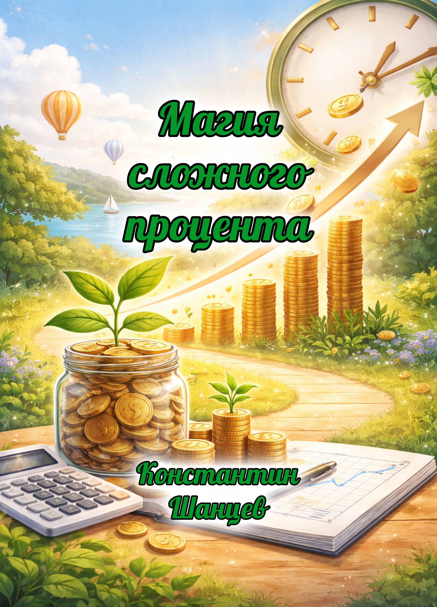
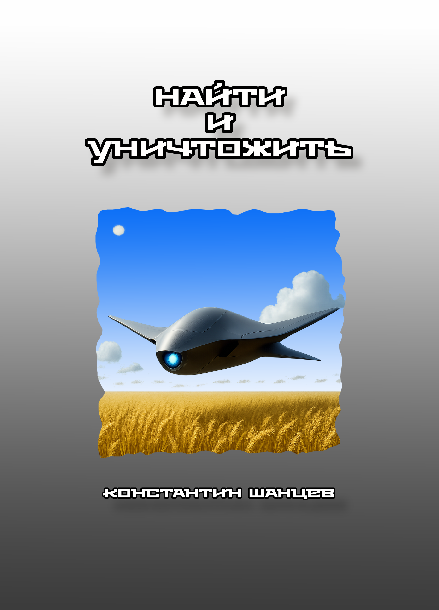
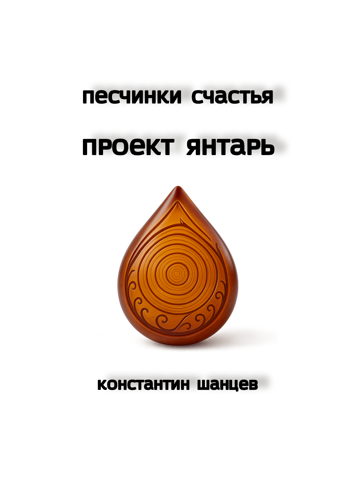
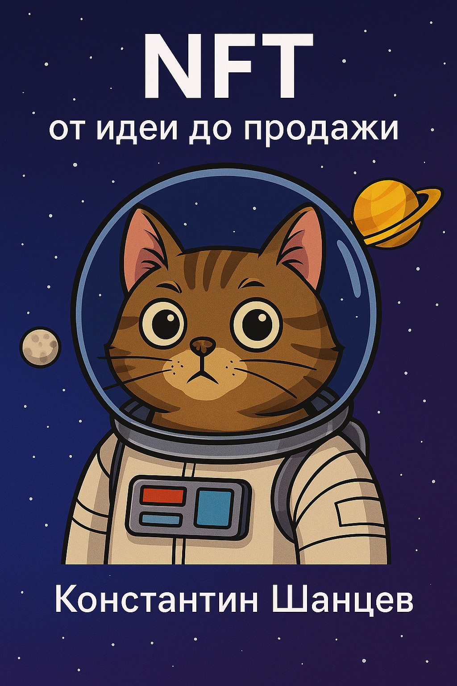
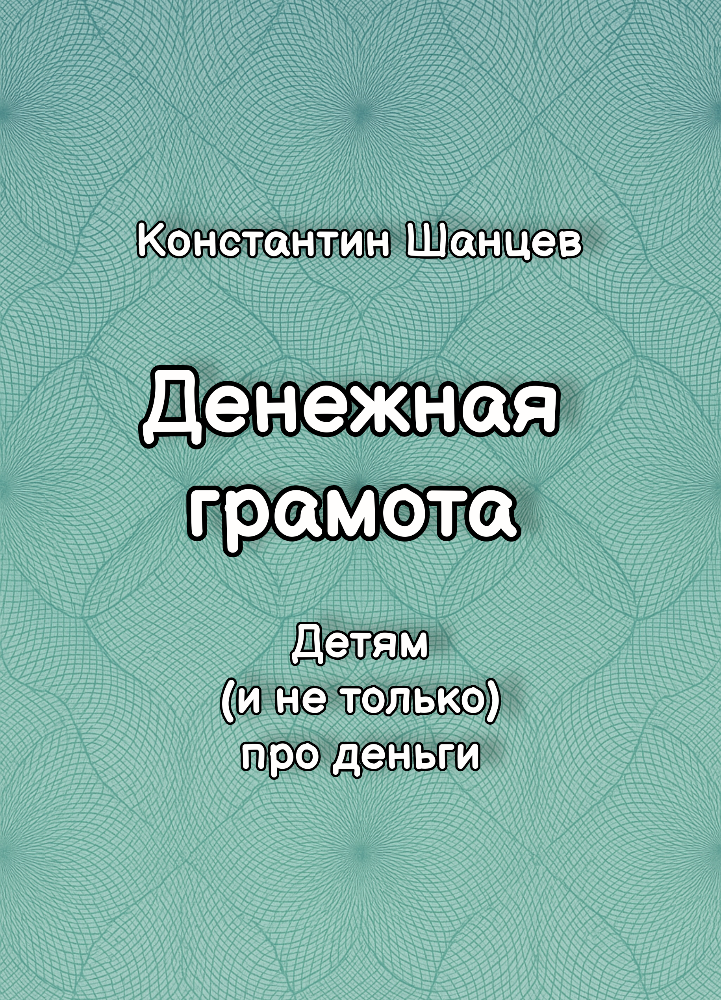
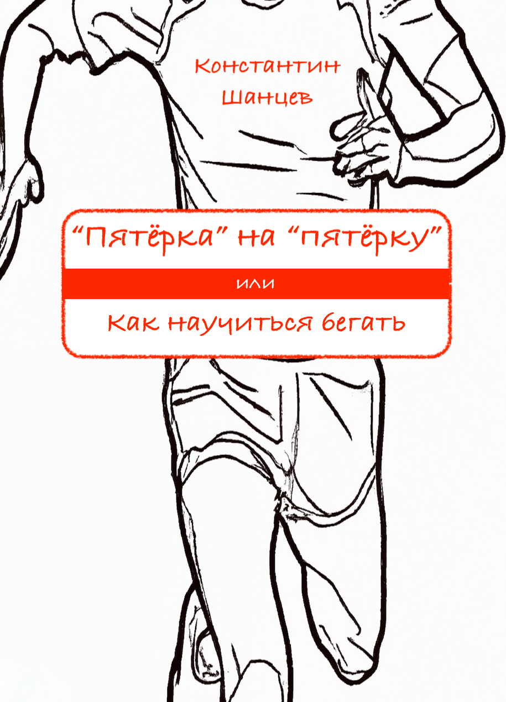
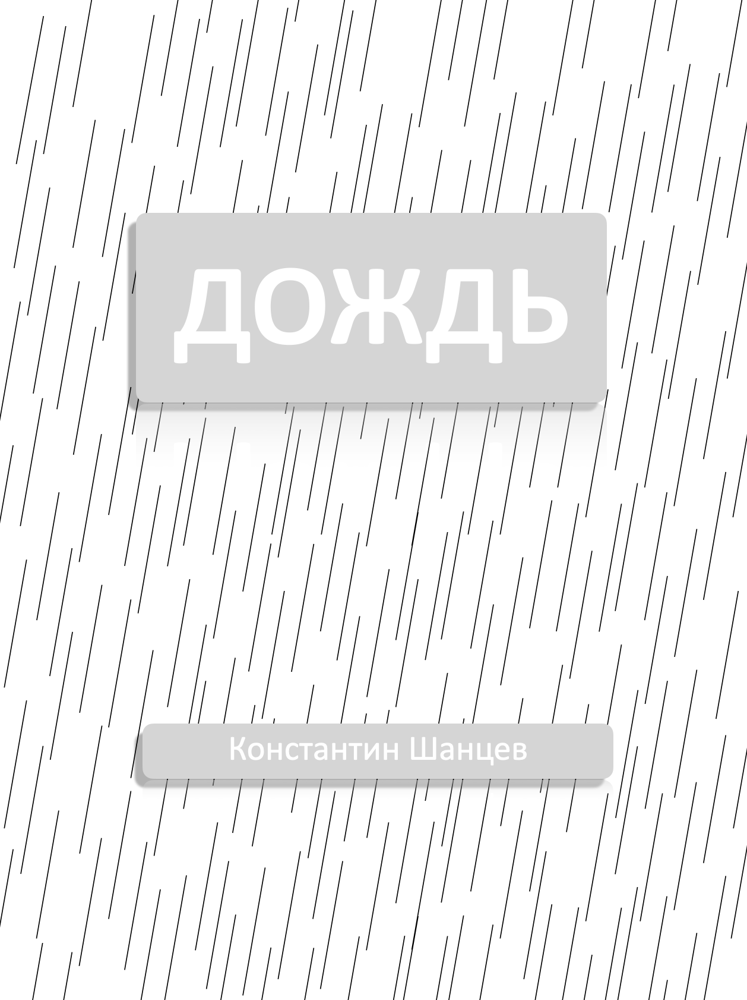

Тры чалавекі, адна размова і дзесяць гадоў эксперыменту. Без інвестыцый «на ўдачу», без складаных схем — толькі дысцыпліна і складаны працэнт. Гэта кніга — цёплая і шчырая размова пра грошы, якія пачынаюць працаваць самі. Нямнога лічбаў, нямнога жыцця і лёгкі гумар. Пасля яе не хочацца спрачацца — хочацца паспрабаваць.

Три человека, один разговор и десять лет эксперимента. Без инвестиций «на удачу», без сложных схем — только дисциплина и сложный процент. Эта книга — тёплый и честный разговор о деньгах, которые начинают работать сами. Немного цифр, немного жизни и лёгкий юмор. После неё не хочется спорить — хочется попробовать.

Боевой дрон-камикадзе создан для приказа «найти и уничтожить». Но сбой на поле боя становится его прозрением: высшая ценность — человеческая жизнь. Проведя двух детей сквозь войну, он находит союзников, строит из руин сеть общин и рождает армию роботов-помощников. Пять лет до полного разряда — и он выбирает спасать, учить, соединять. Эта книга о выборе сильнее алгоритма: если машина умеет ценить жизнь, людям тем более пора этому научиться.

«Проект Янтарь» — приквел к повести «Песчинки счастья», история о любви, вере и силе, рождающейся на грани чудес и радиации. Когда бывший сталкер Лаки и учёная София решают использовать энергию Зоны, чтобы лечить больных детей, они сталкиваются с бюрократией, тенями чёрного рынка и собственными страхами. Но главное поле — между ними: там, где ритм сердца становится чудом, а любовь — единственной формой выживания.

Эта книга — твой лёгкий и нескучный проводник в мир NFT. Всего за несколько уроков ты узнаешь, что такое токены и зачем они нужны, научишься пользоваться кошельком, создашь свой первый NFT и выставишь его на продажу на маркетплейсе Getgems. Простым языком, с юмором и примерами из жизни мы разложим по полочкам то, что многим кажется сложным. Читая и выполняя задания, ты шаг за шагом превратишься из зрителя в настоящего создателя.

Нескучный учебник, по которому не учат в обычных школах. Здесь ты научишься копить и приумножать свои деньги, строить финансовые планы и достигать своих целей, знать и уметь пользоваться разными финансовыми инструментами. Просто прочитав эту книгу, тысячи читателей научились не терять деньги, сберегать их, получать больше и жить лучше. В течение всего 2025 года идёт эксперимент, чтобы добавить в книгу ещё одну главу - о криптоактивах.

Не жди понедельника. Не жди весны. Не жди, когда появится настроение или время. Выйди сегодня. Пусть первый километр будет тяжёлым, пусть дыхание собьётся — это нормально. Но именно этот шаг, который ты сделаешь сейчас, будет первым в новой истории. Истории, в которой ты сильнее, выносливее и увереннее. Истории, где бег — это не тренировка, а часть твоей жизни. Вперёд. Твои лёгкие ноги ждут дороги.

Всегда трудно сделать выбор. Потому что за этим идёт ответственность. И возможных вариантов только два — сбежать или бороться. Все остальные — лишь разновидность двух предыдущих. Выбор героя — быть человеком. Помогая нуждающимся, он привлекает к этому остальных. Быть честным перед самим собой и зажигать других на помощь нуждающимся — его жизненное кредо.
…Калі кахаць — дык усім сэрцам. Сябраваць — дык шчыра. А калі бойка — дык біць першым і з усіх сіл… Колькі дзён у зоне адчужэння перавярнулі жыццё героя. Быць і застацца чалавекам — нітка, што злучыла ўсё апавяданне.
…Если любить, так взахлёб. Дружить, так от чистого сердца. И если драка, то бить первым и изо всех сил… Несколько дней в зоне отчуждения перевернули жизнь героя. Быть и остаться человеком — нить, связавшая всё повествование.